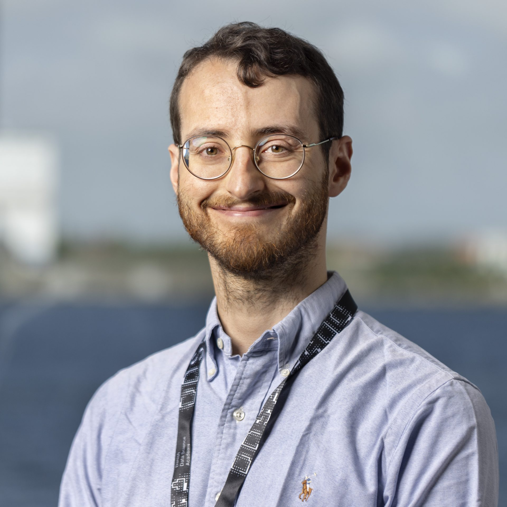

Luigi Gresele
I work on representation learning and causal inference.
I’m currently a postdoc in the Copenhagen Causality Lab (CoCaLa) at the University of Copenhagen.
In January 2027, I will join the Technical University of Denmark (DTU) as an assistant professor.
PhD opportunities in Copenhagen
Together with Sebastian Weichwald, I am recruiting PhD candidates through the University of Copenhagen (KU) for two projects.
- Causal foundations of mechanistic interpretability Understanding when language-model representations reveal mechanisms relevant to generalization, robustness, and AI safety.
- Causal representation learning across subgroups Learning shared causal descriptions despite individual differences, motivated by neuroimaging.
In the general call from KU’s Department of Mathematical Sciences, look for “Causality and reliable ML at the Copenhagen Causality Lab”.
Please apply through KU by .